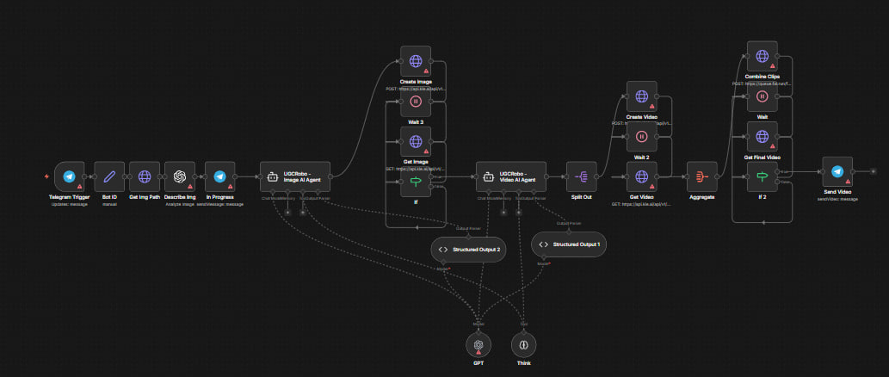
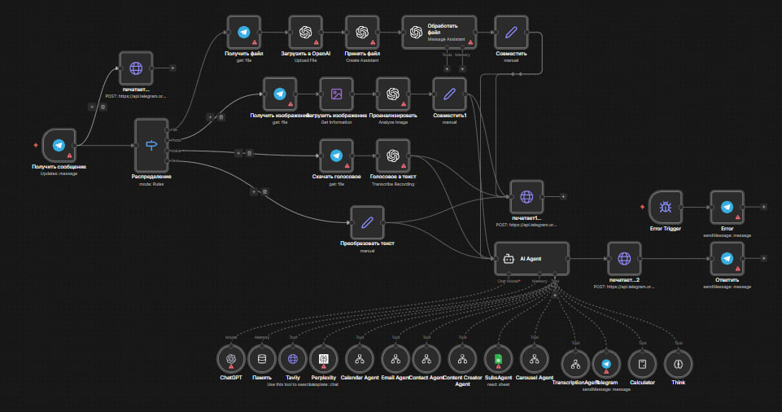

Automation Engineer
n8n • API Integrations • AI Automation
About Me
Automation Engineer specializing in workflow automation using n8n and API integrations.
Developed 55+ automation workflows including AI agents, lead processing systems, CRM automation, data parsing pipelines and AI content generation systems.
Tech Stack
Projects
AI Business Assistant with RAG Memory
AI agent that uses RAG (Retrieval Augmented Generation) memory to answer user questions with high accuracy, using company knowledge stored in a database.
The agent retrieves relevant information from a Supabase PostgreSQL knowledge base and combines it with LLM reasoning to generate contextual responses — allowing the assistant to behave as if it deeply understands the business.
Flow: User → Telegram / API → n8n → Vector Search → Supabase PostgreSQL → LLM → Response
Tech: n8n • OpenAI • RAG • Supabase • PostgreSQL • Vector Search • Telegram

AI UGC Video Generation Automation
Automation system that generates professional UGC-style marketing videos of any length from a single image.
The system automatically transforms a product photo into a dynamic video by combining AI video generation, script creation, voice synthesis and automated scene assembly.
The workflow allows businesses to generate marketing videos at scale without manual video production.
Flow: Image Upload → n8n → Script Generation → AI Video Generation → Voice Over → Scene Assembly → Final Video
Tech: n8n • AI Video Generation • OpenAI • Image-to-Video • Voice AI • API Integrations

Multi-Agent AI Personal Assistant
AI assistant that manages daily tasks, schedules, contacts and communication while staying connected to the internet for real-time information.
The assistant can analyze files, images and voice messages, retrieve news and web data, manage contacts and automatically send emails.
The system uses a multi-agent architecture where different AI agents handle specific tasks such as web search, scheduling, file analysis and communication.
Capabilities:
- Manage schedules and reminders
- Store and retrieve contacts
- Search the internet and analyze news
- Analyze images and documents
- Process voice messages
- Send automated emails
- Coordinate multiple AI agents for complex tasks
Flow: User → Telegram / API → n8n → Task Router → Multi AI Agents → External APIs → Response / Action
Tech: n8n • OpenAI • Tavily • Perplexity • Multi-Agent Systems • API Integrations

Contact
Telegram: @Av3Ars
Email: arsenavetisyan37162@gmail.com
GitHub: github.com/ArsenA527